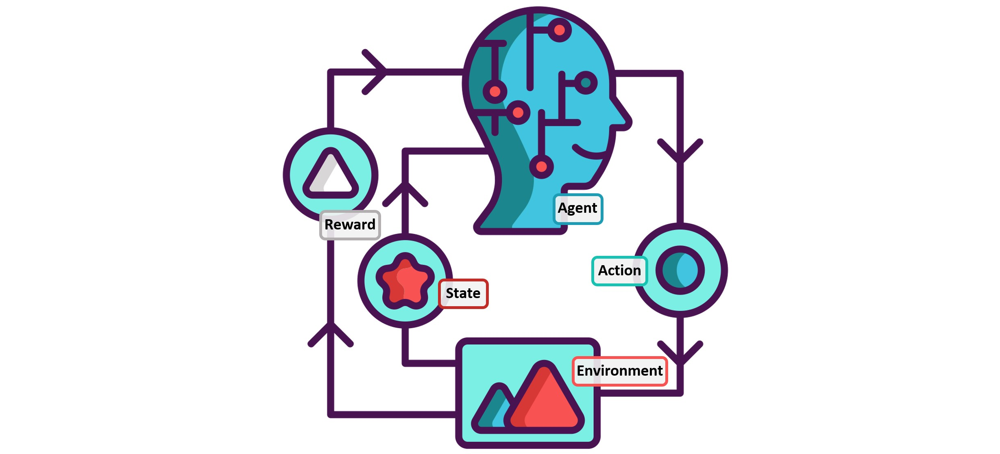

Reinforcement Learning

I have done several projects which have involved the implementation of Reinforcement Learning algorithms.
These include the following:
- Markov Decision Process (MDP) Policy Optimization
- Finite Horizon and Infinite Horizon
- Exact and Approximate Policy Optimization
- Value Iteration
- Policy Evaluation
- Policy Iteration
- Implmemented a Linear Quadratic Regulator (LQR) to solve an OpenAI cartpole environment
- Implmemented a Deep Q Network to solve an OpenAI cartpole environment and a lunar lander environment
- Implemented Natural Polict Gradient (NPG) for an OpenAI cartpole environment
- Implemented DAgger imitation learning for an OpenAI cartpole environment